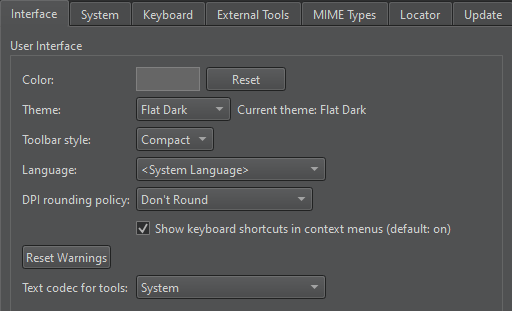

Keyboard Shortcuts
Qt Design Studio has various keyboard shortcuts that speed up your development process. To view all Qt Design Studio functions in and their keyboard shortcuts, select Preferences > Environment > Keyboard.

The shortcuts that are displayed in red color are associated with several functions. Qt Design Studio executes the function that is available in the current context. If several functions are available for the same shortcut at a time, there is a conflict and Qt Design Studio cannot execute any function.
A keyboard shortcut might also conflict with a shortcut that a window manager uses for its own purposes. In that case, Qt Design Studio shortcuts do not work. Typically, you can configure the shortcuts in the window manager, but if that is not allowed, you can change the Qt Design Studio shortcuts.
To override the platform default value that determines whether keyboard shortcuts are shown in the labels of context menu items, select Preferences > Environment > Interface. The label of the Show keyboard shortcuts in context menus check box indicates whether the platform default value is on or off.

The following tables list the default keyboard shortcuts. They are categorized by actions.
General Keyboard Shortcuts
| Action | Keyboard shortcut |
|---|---|
| Open file or project | Ctrl+O |
| New project | Ctrl+Shift+N |
| New file | Ctrl+N |
| Select all | Ctrl+A |
| Delete | Del |
| Cut | Ctrl+X |
| Copy | Ctrl+C |
| Paste | Ctrl+V |
| Undo | Ctrl+Z |
| Redo | Ctrl+Y |
| Ctrl+P | |
| Save | Ctrl+S |
| Save all | Ctrl+Shift+S |
| Close window | Ctrl+W |
| Close all | Ctrl+Shift+W |
| Close current file | Ctrl+F4 |
| Go back | Alt+Left |
| Go forward | Alt+Right |
| Go to line | Ctrl+L |
| Locate files and other content within the project | Ctrl+K |
| Next open document in history | Ctrl+Shift+Tab |
| Previous open document in history | Ctrl+Tab |
| Switch to Welcome mode | Ctrl+1 |
| Switch to Edit mode | Ctrl+2 |
| Switch to Design mode | Ctrl+3 |
| Switch to Debug mode | Ctrl+4 |
| Switch to Projects mode | Ctrl+5 |
| Switch to Help mode | Ctrl+6 |
| Toggle Issues | Alt+1 (Cmd+1 on macOS) |
| Toggle Search Results | Alt+2 (Cmd+2 on macOS) |
| Toggle Application Output | Alt+3 (Cmd+3 on macOS) |
| Toggle Compile Output | Alt+4 (Cmd+4 on macOS) |
| Toggle Terminal | Alt+5 (Cmd+5 on macOS) |
| Toggle Version Control | Alt+6 (Cmd+6 on macOS) |
| Toggle QML Debugger Console | Alt+7 (Cmd+7 on macOS) |
| Toggle General Messages | Alt+8 (Cmd+8 on macOS) |
| Maximize output views | Alt+Shift+9 |
| Move to next item in output | F6 |
| Move to previous item in output | Shift+F6 |
| Activate Projects view | Alt+X |
| Activate Open Documents view | Alt+O |
| Activate File System view | Alt+Y, Alt+F |
| Toggle left sidebar | Alt+0 (Cmd+0 on macOS) |
| Toggle right sidebar | Alt+Shift+0 |
| Full screen | Ctrl+Shift+F11 |
| Exit Qt Design Studio By default, Qt Design Studio exits without asking for confirmation, unless there are unsaved changes in open files. To always be asked, select the Ask for confirmation before exiting check box in Preferences > Environment > System. | Ctrl+Q |
Design Mode Keyboard Shortcuts
You can use the following keyboard shortcuts when editing QML files in the Design mode.
| Action | Keyboard shortcut |
|---|---|
| Open the QML file that defines the selected component | F2 |
| Jump to the Code view. | F4 |
Editing Keyboard Shortcuts
| Action | Keyboard shortcut |
|---|---|
| Auto-indent selection | Ctrl+I |
| Collapse | Ctrl+< |
| Expand | Ctrl+> |
| Trigger a completion in this scope | Ctrl+Space |
| Display tooltips for function signatures regardless of the cursor position in the function call | Ctrl+Shift+D |
| Copy line | Ctrl+Ins |
| Copy line down | Ctrl+Alt+Down |
| Copy line up | Ctrl+Alt+Up |
| Paste from the clipboard history | Ctrl+Shift+V |
| Cut line | Shift+Del |
| Join lines | Ctrl+J |
| Insert line above current line | Ctrl+Shift+Enter |
| Insert line below current line | Ctrl+Enter |
| Decrease font size | Ctrl+- (Ctrl+Roll mouse wheel down) |
| Increase font size | Ctrl++ (Ctrl+Roll mouse wheel up) |
| Reset font size | Ctrl+0 |
| Split | Ctrl+E, 2 |
| Split side by side | Ctrl+E, 3 |
| Remove all splits | Ctrl+E, 1 |
| Remove current split | Ctrl+E, 0 |
| Go to next split | Ctrl+E, O |
| Select all | Ctrl+A |
| Go to block end | Ctrl+] |
| Go to block start | Ctrl+[ |
| Go to block end and select the lines between the current cursor position and the end of the block | Ctrl+Shift+] |
| Go to block start and select the lines between the current cursor position and the beginning of the block | Ctrl+Shift+[ |
| Select the current block The second press extends the selection to the parent block. To enable this behavior, select Preferences > Text Editor > Behavior > Enable smart selection changing. | Ctrl+U |
| Undo the latest smart block selection | Ctrl+Alt+Shift+U |
| Move current line down | Ctrl+Shift+Down |
| Move current line up | Ctrl+Shift+Up |
| Trigger a refactoring action in this scope | Alt+Enter |
| Rewrap paragraph | Ctrl+E, R |
| Enable text wrapping | Ctrl+E, Ctrl+W |
| Toggle comment for selection | Ctrl+/ |
| Visualize whitespace | Ctrl+E, Ctrl+V |
| Find references to symbol under cursor | Ctrl+Shift+U |
| Follow symbol under cursor Works with namespaces, classes, functions, variables, include statements, and macros, as well as CMake functions, macros, targets, and packages. Also, opens URLs in the default browser. | F2 |
| Rename symbol under cursor | Ctrl+Shift+R |
| Switch between function declaration and definition | Shift+F2 |
| Open type hierarchy | Ctrl+Shift+T |
| Add a cursor at the next occurrence of selected text for multi-cursor editing | Ctrl+D |
| Turn selected text into lowercase | Alt+U |
| Turn selected text into uppercase | Alt+Shift+U |
| Sort selected lines alphabetically | Alt+Shift+S |
| Run static checks on JavaScript code to find common problems | Ctrl+Shift+C |
| Find and replace | Ctrl+F |
| Find next | F3 |
| Find previous | Shift+F3 |
| Find next occurrence of selected text | Ctrl+F3 |
| Find previous occurrence of selected text | Ctrl+Shift+F3 |
| Replace next | Ctrl+= |
| Open advanced find | Ctrl+Shift+F |
Project Keyboard Shortcuts
| Action | Keyboard shortcut |
|---|---|
| New project | Ctrl+Shift+N |
| Load project | Ctrl+Shift+O |
| Run | Ctrl+R |
Help Keyboard Shortcuts
| Action | Keyboard shortcut |
|---|---|
| View context-sensitive help | F1 |
| Add bookmark in Help mode | Ctrl+M |
| Activate index in Help mode | Ctrl+Shift+I |
| Activate search in Help mode | Ctrl+Shift+/ |
| Activate bookmarks in Help mode | Ctrl+Shift+B |
| Activate contents in Help mode | Ctrl+Shift+C |
Version Control Keyboard Shortcuts
| Action | Keyboard shortcut |
|---|---|
| Stage file for commit | Alt+G, Alt+A |
| Commit | Alt+G, Alt+C |
| Diff current file | Alt+G, Alt+D |
| Diff project | Alt+G, Alt+Shift+D |
| Blame | Alt+G, Alt+B |
| Log current file | Alt+G, Alt+L |
| Log project | Alt+G, Alt+K |
| Reset | Alt+G, Alt+U |
See also Assign keyboard shortcuts, Find keyboard shortcuts, and Import and export keyboard shortcuts.